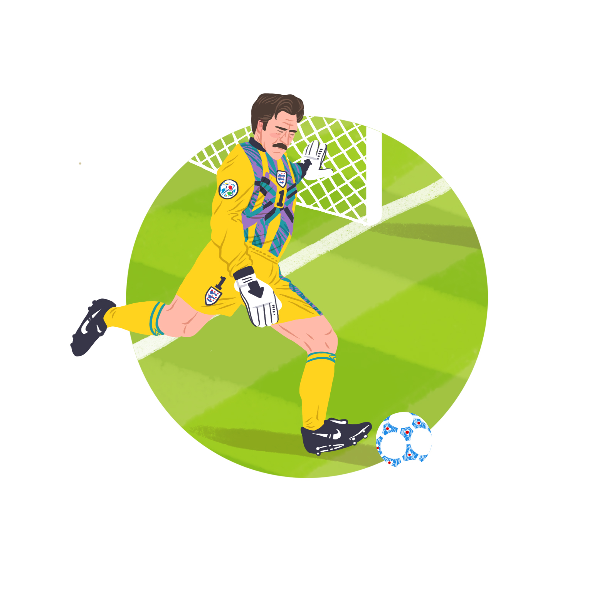
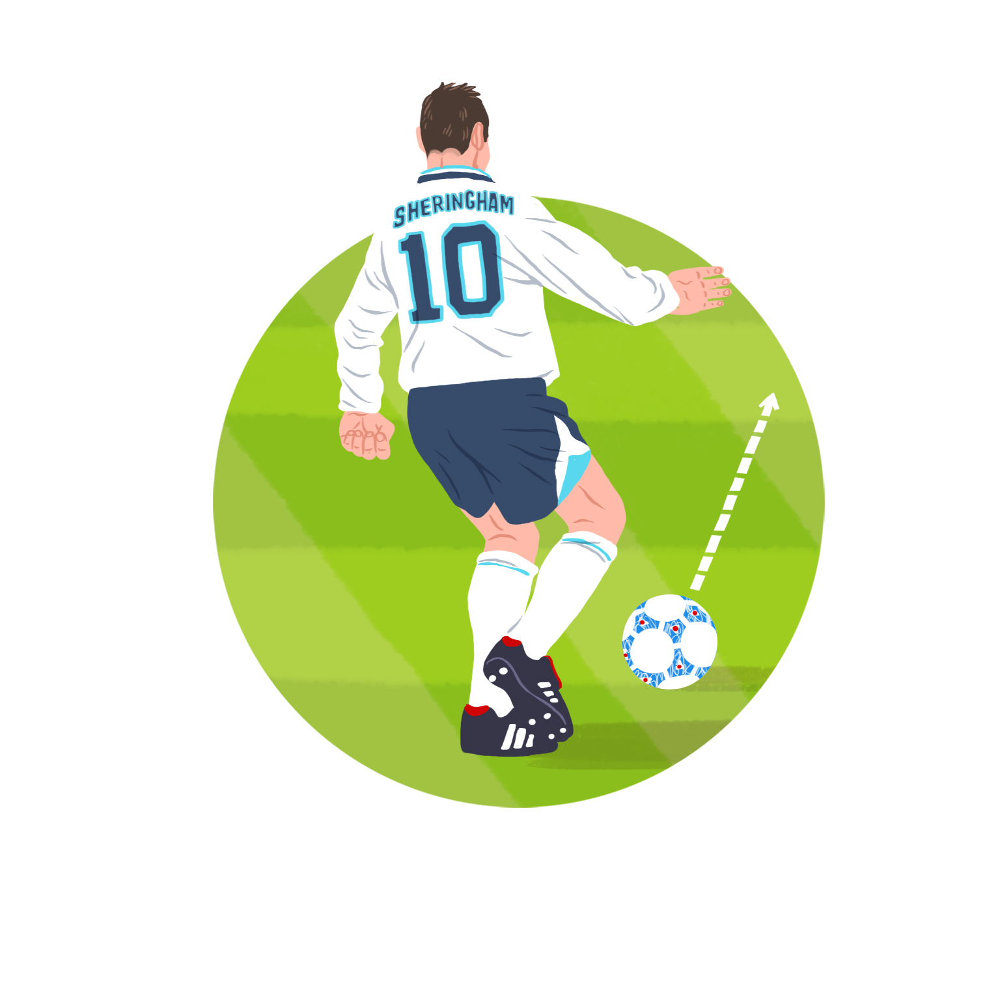
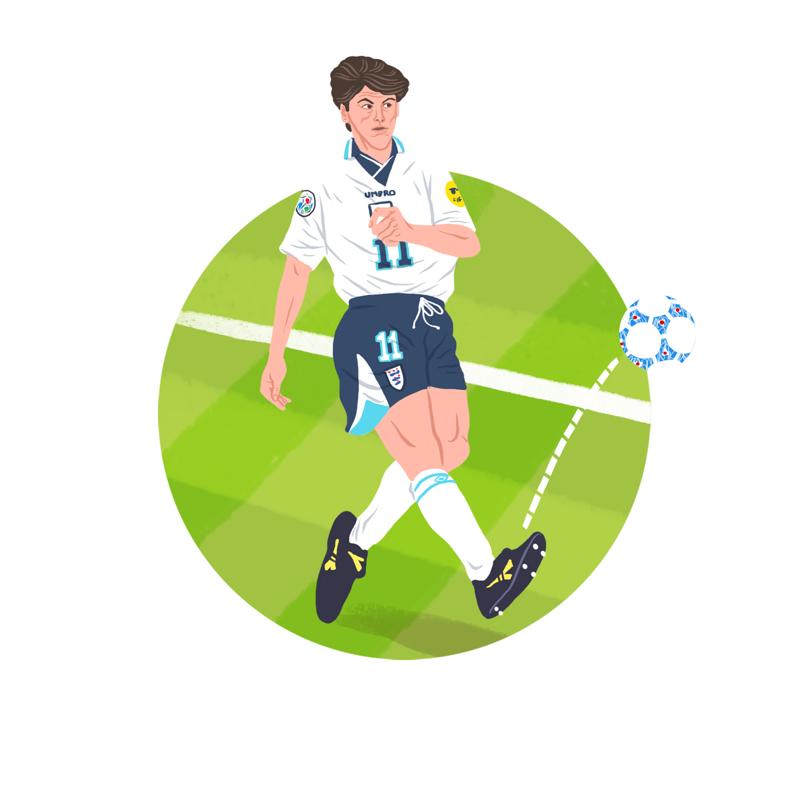
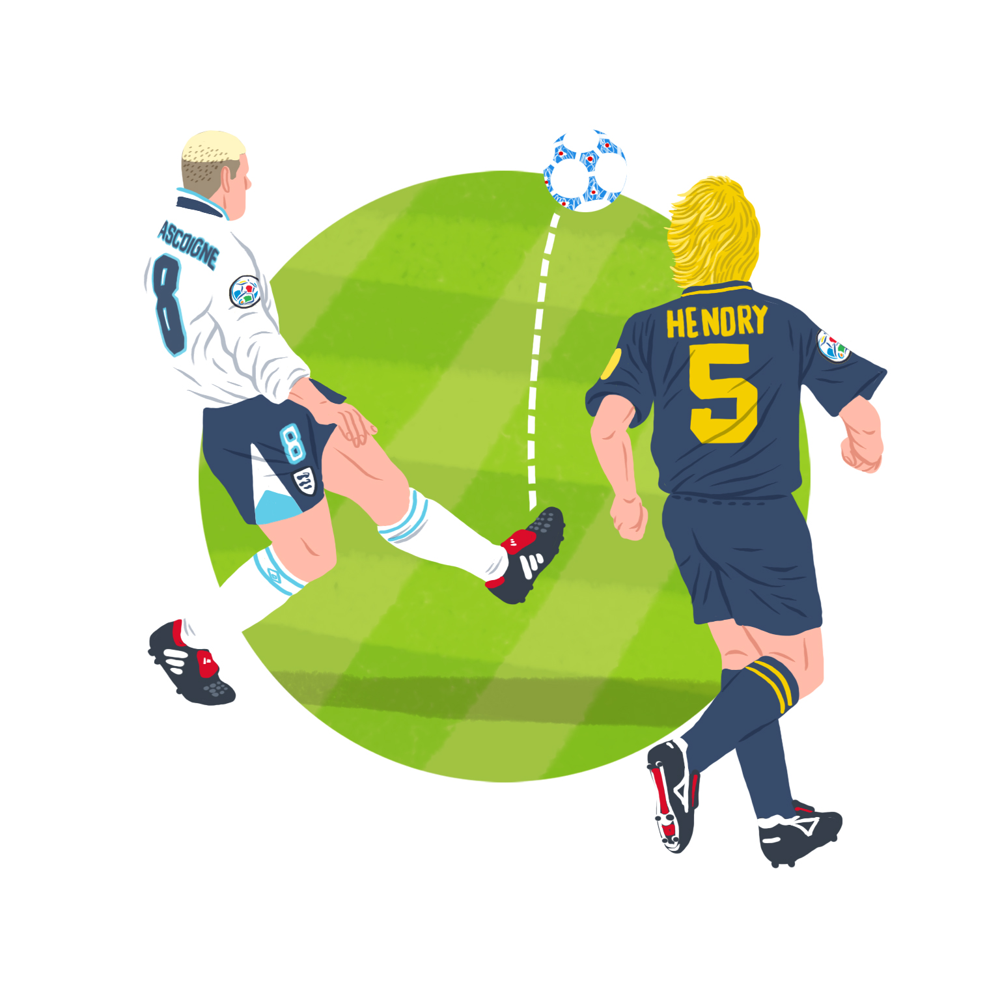
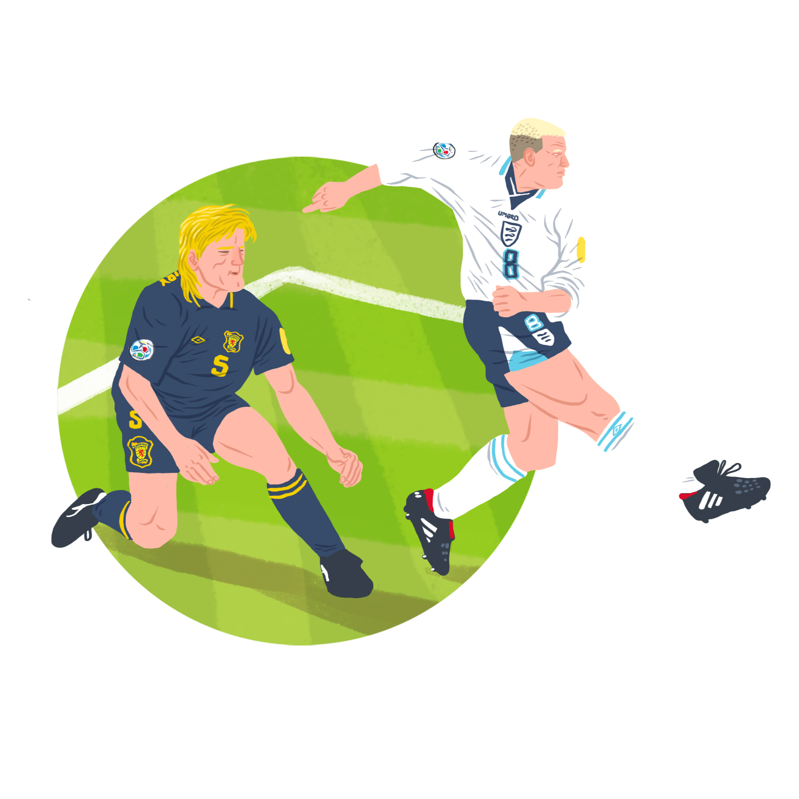
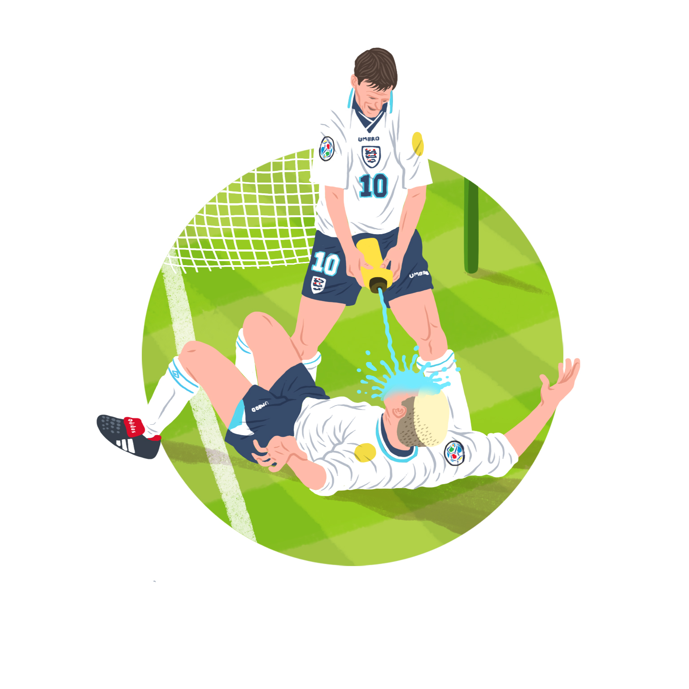

It was Darren Anderton, with the assist. It's hard to remember that, given what followed, but it was Darren Anderton – Little Darren Anderton,
with his hamstrings, the injuredest footballer of the '90s, in that way the most Arsenal player to ever play for Tottenham – who lofted the ball
forward. It's hard to remember, with the rosy glow of hindsight, just how hopeful a ball that was. England-Scotland, 1996, England 1-0 up but Scotland
with a point to prove and the pedigree to prove it, Scotland swarming forward, Scotland with the penalty, Seaman saves it, Seaman a Technicolor dream
in yellow and aquamarine and green, Seaman screaming, "YES!", Seaman screaming, "COME ON!", and then Darren Anderton punts the ball forward, and then:

Gazza. Perfect Gazza. In his own time zone Gazza. We are on Gazza Time, now. Gazza Time is more or less GMT but the seconds turn to heavy minutes when
the ball comes close to his feet. You know what happens next: you see it in your dreams. Gazza's legs in double time with his body, perfect white shirt,
insane bleached hair. Gazza conjuring the ball out of the clear blue sky, plucking it like you would a rose, coddling it to the ground. Gazza lifting the
ball impudently over Colin Hendry, Colin Hendry hitting the floor now, eating grass, Colin Hendry Is Skipping Dinner Because He Had A Load Of Grass Earlier,
Thanks Though Hen, But I'm No Hungry. Colin Hendry the most done a defender has ever been, RIP Colin Hendry, Colin Hendry is dead, bring out the lilies and
let his family see the corpse, and then, before you've processed it, before you've even got your head around the fact that we're going to have to hold a
funeral for Colin Hendry right here on the lush Wembley turf, that we're going to have to light candles and sing ancient Scottish defending songs, Gazza
puts every single one of his laces through the ball, through Andy Goram, through the back of the net, through history, Gazza reeling away, his place in the
annals of time all but assured. And that's before even Alan Shearer gets the Lucozade out. The greatest goal and the greatest celebration. The greatest Gazza has ever been.
This is the exact moment when Gazza and Paul Gascoigne collided. That flick over Colin Hendry (1965-1996) was Paul Gascoigne showing that he was the best midfielder in the world; that goal was the best England goal of all time. And the celebration was pure Gazza. Gazza and Gascoigne aren't two halves of the same nut, not a ying finely balanced with a yang; the relationship was more pervasive than that, like ivy growing through a tree. But there, on the floor, mouth full of isotonic sports drink to toast Colin Hendry's life, that's when he was both: Paul John Gascoigne and the monster inside him, Gazza, the greatest creative English player of all actual time.

Paul Gascoigne did sumptuous free kicks; Gazza broke his own arm elbowing George Boateng’s face. Paul Gascoigne was the engine that drove England to the World Cup semifinal, Tottenham to the FA Cup; Gazza played the flute. There are grey areas: it's not clear which side of him beat his wife, burped into an Italian microphone, broke his kneecap in a nightclub, put a dead snake in Roberto Di Matteo’s pocket, but most often it went like this: Gazza sinned, and Paul Gascoigne repented. Gascoigne played Ruud Gullit off the park to announce himself as the best midfielder in the world in 1990; Gazza broke his leg a year later getting too fired up for the FA Cup Final. Gazza was an idiot. Paul Gascoigne was a damaged innocent.
To understand Gazza, you have to trace back to where it all started: there’s more than a hint of the Greek antihero about him. When he was nine – when he was a boy who would dribble his football to the shops with him and practise fine-twitch foot control by kicking a tennis ball about – he watched as the younger brother of a friend he'd been tasked taking care of ran out between two cars and was struck by a van: Gascoigne cradled his head as he made his last few dying motions. That's harrowing enough for any kid, but when you're a working class kid from a poor family in the North, you don't go to therapy sessions to get over it, you don't talk about it to child psychologists: you get on, you do, you stiffen that upper lip lad, you give over. With that, and the later death of another friend, a fellow Newcastle trainee he'd encouraged to join from Middlesbrough Youth, who was killed in an accident on Gascoigne’s uncle’s building site after floundering at the bigger club, he developed nervous tics, obsessive tendencies, sleeping problems, a psychic skeleton on which the high octane Gazza character was eventually built. With burgeoning addictions – first to food and low-level gambling, later to booze and sleeping pills – Gazza’s escape became football. The field was the only place his mind would quieten down enough to let him think. “I didn't have twitches or worry about death when I was playing football,” he wrote in his autobiography. See him in his prime, lunging for every ball and crashing into every tackle, and you can see a player visibly escaping something.

Gazza’s career started at his home club, Newcastle, when he broke into the first-team squad after winning the FA Youth Cup at 18. Even then, his career was defined by undulating between moments of exquisite footballing genius and off-the-field let downs: his coaches, first Jack Charlton then Willie McFaul, had him training in black bin bags to help sweat the pounds off so he was fit enough to decimate teams every Saturday. Gazza had a routine: he spent his weekdays eating sweets and going mental on fruit machines and his weekends slamming exquisite free kicks past every goalkeeper in the league. But his form was irrepressible: by the end of his second season of Newcastle he was on the cover of the Rothman’s Football Yearbook as the standout player in the league. In the 87–88 season he walked onto a pitch with Vinnie Jones and left after having had his bollocks man-marked out of contention. Vinnie Jones’ hand on your bollocks is a compliment. Vinnie Jones’ hand on your bollocks says, “Yes, this hurts, but it’s a sign of deep respect.” Vinnie Jones doesn’t want to put his hand on your bollocks. There are plenty of things Vinnie Jones would rather touch than your bollocks. But if Vinnie Jones is man-marking you so hard you flirt with infertility, it means something. Vinnie Jones marking your bollocks off of your body means you’re definitely the best player in the league. Gazza was 21.
After winning the PFA Young Player of the Year award, big clubs came calling. This is where the Gascoigne timeline splinters into three separate ‘what if?’ scenarios: Gascoigne preferred a move to Kenny Dalglish’s Liverpool (what if?), but with no offer forthcoming he agreed terms with Manchester United (what if, though?). Fergie, safe in the knowledge that he’d bagged his man, went on holiday to Malta – only for Tottenham Hotspur to steal in with a British record £2.2 million bid, the story going that they promised to buy Gazza’s family a house (and his sister a sunbed) if he signed for them. And lo.
The received wisdom in football is that under the tutelage of Ferguson, Gazza’s head could have aligned with his legs to become the world beating complete footballer his potential predicted he would be (this is, though, ignoring Paul McGrath, similarly cursed with glass knees and chronic alcoholism and blessed with world class footballing talent, who Ferguson lost patience with the same year he tried to sign Gazza and instead shipped out to Aston Villa for £400,000 – Fergie, pre-treble Fergie, pre-knighthood Fergie, would not have had the tolerance to nurse a wounded bird like Gazza to the dizzy heights he was capable of reaching). But at Tottenham Gazza found the coach that you feel, with hindsight, was always the greatest fit for his precocious talent: Terry Venables, the perfect blend of fatherly arm-round-the-shoulder come-on-Gazza and tough-talking pull-your-bollocks-up-and-score-a-fucking-goal-son. Slotting into a team that was sprinkled with touches of talent – Mabbutt, Lineker, Nayim – but with a fair helping of anonymous cloggers, young Gazza immediately became the team’s heartbeat, the star midfielder, as they completed sixth then third place finishes. In 1991, his spang-the-fucker-past-David-Seaman unstoppable free kick took Spurs past Arsenal to the FA Cup final.

Before that, though, was the small matter of the 1990 World Cup. Hindsight again fools us into thinking England were doing better than they were – this was a team that struggled to qualify at all, with a departing Bobby Robson as manager, caught in a tempestuous relationship with the tabloid press – they spun his mooted move to Barcelona after his England stint as being some Judas Escariot-type betrayal of his country, and branded the team “donkeys” after the 0-0 draw with Poland that secured qualification. This was an England team reliant on age – first-pick goalkeeper Shilton was 40 at the start of the tournament: Bryan Robson was 33, Lineker 29 – and smatterings of creative talent (Waddle, Barnes, Beardsley) to elevate an otherwise anonymous team. Into that, Gazza – on just 11 caps, his England career in its infancy – was considered a maverick pick to be agonised over by the more conservative Bobby Robson.
It was a squad that became more than the sum of its parts to reach the World Cup semifinals. There was that element of something Other that took them there: a slow group stage started with a ground-out draw against Jack Charlton’s Ireland; eking past Belgium with a last minute Platt wündergoal, going the long way round to beat Cameroon in extra time. Listen to the wrong people and they’ll tell you England skipped and dribbled through the World Cup until they were stopped by the Teutonic, joyless Germans, spoiling the party and shitting on our destiny to win the thing, but not so: it’s only through stars aligning and sheer until-you-taste-blood running that England got anywhere near the semis. England’s tactics for the tournament may as well have been, ‘Alright, lads, I wanna go the pub now: next goal wins, yeah?’
Gazza was having a ball in Italy. He always loved linking up with the England squad – for a player so defined by his banter, he rarely seemed to hang out with his team mates at club level, preferring instead to live at nearby hotels, to go out on the piss with Danny Baker – but with England, he found kindred spirits, i.e. lads who were good at football and didn’t mind getting the ales in. Gascoigne turned 23 beneath the Roman sun, his England team mates bringing him a birthday cake during one of the tournament’s rest days and smearing it all over his face, and he celebrated by putting Ruud Gullit in his pocket and running him around the pitch for 90 minutes against Holland. For a hint of that special something, that hint of something Other that made that England team so good, it’s no push to look to Gazza as that secret ingredient: Gazza in his beautiful personal prime, cheeky child’s face, still a touch of puppy fat about him; his chirpy presence galvanising the team, his engine on the pitch was something for them to build around when they lost Bryan Robson to injury. Gazza was the glue and he was the fabric. By the time he wept on the pitch in Turin, Gazza was an icon. He was also, unassailably, the best young midfielder in the world.
Because such is the legacy of Gazza that we forget how well Paul Gascoigne played. Watch some highlights back from his Rangers days, where the video is fuzzy and he's wearing uniconic close-cropped plain brown hair, and you feel like you're watching some lost talent, a This Is The Best Player Never To Be Capped By England reminisce. Gazza, like no other player since Maradona, played football with his torso: often maligned for his weight during his career, Gazza played with his chest, with his arms, upper body strength crucial to keeping defenders a half-inch further away than they wanted to be before his feet kicked in, will-o'-wisping the ball between their legs, Cruyff-turning them down to the dust. Gazza ran primarily with his arms while his legs caught up: his body was an engine. And then his footwork: fucking hell, his footwork, Gazza’s trick being that unteachable sixth sense of knowing exactly when to pass the ball and when to keep it, running through three players, four, five, guarding it with his feet, entirely under his thrall. Gazza was the greatest forward passer in the world; it's just he only ever passed from the 86th minute onwards, when he was too knackered from keeping the ball to himself to run anymore. His feet and the league-issue Mitre football had an intimate love affair. They danced together while defenders watched, while Colin Hendry's heart ceased beating in his chest. He was as light on his feet as a ballet dancer until he didn't need to be, until he pirouetted into space and saw great fields to run in, so he surged forward, Gazza the ultimate playground footballer, running with the ball with his foot half sideways, lazily, cockily, like you always dreamed you'd play the night before PE, before you were played off the park by the bigger boys, Gazza taking on two or three more defenders than any English coach will advise, Gazza the wrong nationality, surely, check and double check, are we sure an Argentine didn't fuck his way around Newcastle in the early 1960s?

It was this continental flair (and Italy’s lingering post-World Cup Gazzamania) that took him to Lazio in 1992, at a time when Serie A had every best player in the world. But before that, Gazza had to fuck it up: the initial negotiations were made in the build-up 91 FA Cup Final, where Gascoigne gave way to Gazza, ran onto the park on a breakfast of adrenalin and very little else, feet in here, rough pull there, kicking too hard, running too hard, a kid who’s been held in detention for most of his lunch break but is determined to score a goal in the last seconds of the hour, until, fifteen minutes into the first big match he could've won anything in, clunk: ruptured cruciate, out for twelve months at least, and that £8.5 million transfer slips off the table. And right when he was recuperating, right when that leg had just scarred over, the tendons in his knees rebuilt, hundreds of hours in swimming pools jogging slowly, clunk: Gazza goes to a Newcastle nightclub, gets chinned, lands on that knee again, feels it in horror as it turns to jelly beneath his desperate check-it’s-still-there thumbs. Now it’s sixteen months, the rest of the season gone. Another hobbled step backwards. Another renegotiation. That – Gazza on the floor of a nightclub, thumbs squishing into the almost healed tendons of his own prized, newly fractured kneecap, not quite processing that his career was delayed again, sticking to the story that some lad clocked him out of nowhere but we’ll never really know, will we, we’ll never really know – that was the other time we approached peak Gazza, ultimate Gazza, the perfect clash of Gazza and Gascoigne, Gazza half-pissed and Gascoigne distraught, both men having to deal with the immediacy of this setback.
It was in these injured spaces that the Gazza side of Gascoigne so thrived: they gave him space to get bored, to get restless, for his mind to wander; you feel that, without Italian defenders to dump on their arses, he needed another way to show off, prove his worth to those around him. Gazza had a number of documented vices, but one of his weaknesses was the need to please people: extravagant family trips to Disneyland, his persistent habit of getting drunk and gifting his dad his new car, re-recording Fog on the Tyne with fucking Lindisfarne. Given time, left to his own devices, given more money than he could possibly spend, Gascoigne receded and Gazza was amplified. Hours on his back on the treatment room allowed that beast to take over.
Italy made him a hero – a debut goal in the Derby della Capitale made him a fan legend forevermore, and coach Dino Zoff loved him ("He ate ice cream for breakfast, drank beer for lunch, and when injured he blew up like a whale. But as a player? Oh, beautiful, beautiful. I loved that boy," Zoff once said. "He was a genius, an artist, but he made me tear my hair out."), but injuries, homesickness, and that unsettling feeling those closest to him were starting to turn (Gazza’s Italian translator did a tell-all book about his time at Lazio; his long term agents were constantly undermining him financially) and it was time to come home. He chose Rangers, the adoring crowds and the chance to be a hero again, and played out the last three decent years of his career there, before winding down through Middlesbrough, Everton, Burnley and Gansu Tianma. Paul Gascoigne’s career was never meant to end with four get-the-gate-up trot outs for Boston United. He was a hall of famer trapped in a bricky’s body.
In many ways, Gazza was a player who was born five years too soon. If he’d came through at Newcastle in 1993 instead of 1988, he would have slotted into that team of entertainers, instead of being a fish too big for a small pond of cloggers hurtling towards relegation. In 1990, he was the sole spark of youth in Bobby Robson's team of donkeys, but shift a generation forward to Euro 96 and it could have been Gazza with good legs and that Manchester United midfield against the world, and we could have won it. Watch Gazza back now and he seems a man out of time: a cultured midfielder in the dying dregs of the meat and potatoes era, the only man making slide rule passes in a league of biff it up to the big man. Peak Gazza in the glitz of the burgeoning Premier League would have been a superstar, shunted up into an attacking role instead of that rove-from-the-middle-but-let’s-not-leave-the-midfield-exposed-boys CM position he always played from instead. What England would give for a Gazza now. In a time of trequartistas and false 10s, imagine the things a fit Gazza with a free role and a decent poacher to ping it through to could do. Gazza was a generation too soon. Gazza was a luxury midfielder before luxury even existed. He was a Bentley Continental on a mud path of carts and horses.

The closest we ever got to seeing the culmination of Gazza was that Euro 96 tournament. Fresh off the back of a Double winning season at Rangers, reunited with Venables, he was, finally, surrounded by a squad with the potential and talent that matched his own – Shearer and Sheringham up top, a midfield bustling with Ince and McManaman, Merson and Adams propping up the bar, a peerless Seaman in goal – with talented youngsters (Gary Neville, Sol Campbell, Robbie Fowler) peeking through. This was a year or two before the Class of ’92 truly bedded in, and you wonder what an England squad with Beckham, Scholes, and Butt could’ve done alongside Gazza, the cross-generational midfielder, the last great English maverick. It was Glenn Hoddle who fucked that up – he cut Gazza from his 30-man England squad before France 98, ending his international career at 30, despite the fact that it was his mature performance in the 0-0 draw with Italy that got them qualification in the first place – but there, on the green grass of Wembley, at least for one last time we got to see Gazza at his best. We got to see Teddy Sheringham squirt Lucozade on him.
Think of Gazza now and you think of the same few anecdotes and images on repeat: that time he fed Jimmy Five Bellies a mince pie full of cat shit, the time he was up until 10pm playing tennis with American tourists the night before the World Cup semifinal because he was restless, that time he burped into a microphone and offended all of Italy. Gazza with the fake tits on, Gazza telling Norway to fuck off, Gazza booking the ref, Gazza’s mutually destructive marriage, Gazza’s alarmingly puffed up face, Gazza with the fried chicken and the fishing rod, Gazza’s 39 chaotic days as manager of Kettering. It’s a sin that we remember a player who played like he did for his off-field antics. Gazza was playing a different game to everyone else: in his prime, he moved through midfield like a fish darting through water - agile, powerful, uncatchable, unstoppable. Shattering his knees did nothing to dull his edge: even into his early thirties, Gazza was a Premier League asset, that unmistakable touch of class, that thing you can’t train and can’t lose, no matter how much you drink and snort, no matter how fat you get, no matter how many times you break those legs. Talk about Gazza and you talk about legacy, about What Might Have Been, what could have happened if he didn’t lose variously four years of his peak career to injury, if he had gone to United, if he hadn’t gone to Lazio and imploded with the loneliness, if he chose the Premier League over Scotland when he moved back in 1995, if Hoddle hadn’t cut him from that 1998 squad. What if he didn’t get the yellow card? If he never cried? What if Gazzamania never happened? What if he got his head down and trained? What if he buried that seed of destruction deep inside him, ignored those yearnings and pulls, got early nights and ate nothing but pasta? What then? What then is you wouldn’t have Gazza. That sparkle of wickedness that led to so much heartache off the pitch was what made him what he was on it. On the pitch was where he found peace, where he was at his best: mercurial, fluid, effortless, gifted. Leave him to his own devices in a hotel room and that’s where it all goes wrong. But train out that spark that made Gazza Gazza – tell him not to run himself into the ground, to hold position, to keep calm - don’t chase every ball, you don’t need to chase every ball – and you lose the player he was. Let him flourish and you get moments that leave you breathless. That’s where you find him, June 15th 1996, the ball warping through the air over the deceased Colin Hendry’s head, Andy Goram knowing what’s coming, Andy Goram’s seen this in training, Andy Goram knows what’s next, and then it drops, and Gazza – touched by the angels and the devil too, touched with that which made him both cursed and blessed – aligned with Paul Gascoigne, and the gods smiled down, and England 2, Scotland 0.